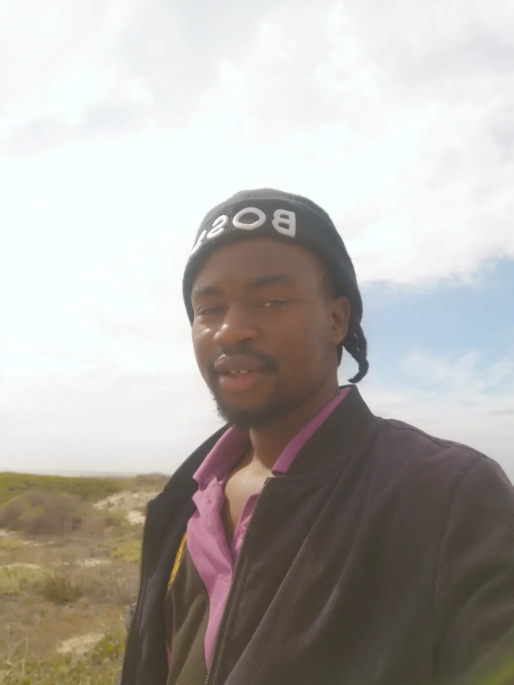

Desmond Chibanda | WDD 130
Hello, my name is Desmond Chibanda. I am a web developer student currently with BYU-Idaho. I reside in Cape Town, South Africa.
Passionate Music Explorer
From Afrobeat rhythms to classical symphonies, I find solace in melodies that transcend borders.
Wanderlust Adventurer
I chase sunsets, hike trails, and collect stories from every corner of our beautiful planet.
My day to day:
- Algorithms are my spells, and IDEs my enchanted scrolls. Each line of code weaves a narrative—a symphony of logic and creativity.
- Gaming isn't just a hobby; it's my alternate reality.
- When not debugging code, I'm lost in mythical realms or dissecting Sun Tzu's "Art of War."
- Embark with me on this sacred journey as I unravel the mysteries of technology, share the echoes of travel adventures, and delve into the depths of the human soul. Above all, let us connect, learn, and code together, guided by the unwavering light of my relationship with Christ.
- My Favourite temples:
- Johannesburg Temple South Africa"
- Denver Colarado Temple"
- Manus Temple Brazil"